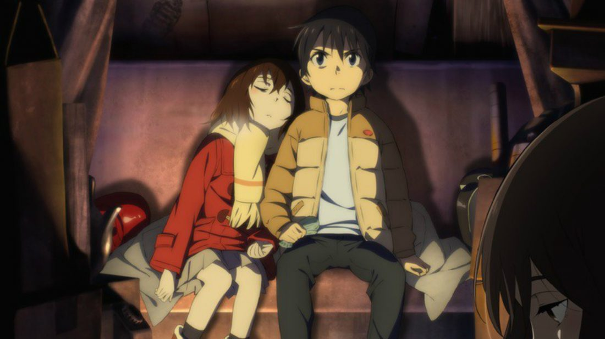

Jojo's Bizarre Adventure is a multi-generational tale about the escapades of the Joestar Family, an aristocratic family with English ancestors. It's separated into eight sections, each of which focuses on a different descendent. Each installment introduces a fresh cast of characters and adversaries, as well as a new environment. Each member of the Joestar bloodline has a star shaped birth mark near their shoulder blade. The varying eras and different countries also produce radically different main characters. The first Joestar – Jonathan - is a gentleman and honourable. Joseph Joestar, however, is a lazy trickster and cheat with a heart of gold. Then you have Jotaro who’s a violent delinquent with little to no respect. Jojo is a series that does away with fillers. The series is all about the action and doesn't give a crap about pandering to sex appeal. It’s different from your typical shounen: employing distinct art styles, the most epic game of rock, paper, scissors you’ll ever see and even a wager for your soul over an intense video game; the series has a lot of originality and creativity.
Shigeo Kageyama is an ordinary middle school student who has earned the moniker Mob (, Mobu, wasei eigo for "background character") for his lack of presence. Despite his unassuming appearance, he is a formidable esper with incredible psychic abilities. To keep from losing control of his strength, he lives in constant emotional restraint. Mob works as an assistant to con-man Reigen Arataka, a self-proclaimed clairvoyant, in order to learn how to control his skills. Mob simply wants to live a normal life like everyone else, but he's constantly being pursued by problems. Mob's power threatens to break through its bounds as he finally encounters other espers like the Claws, as his suppressed emotions develop inside him. His power can be real scary when he is out of control due to his emotions. In this show Mob learns how to control his feelings as well helping out other espers and turning them into good people.
One Piece is a fantasy adventure set in a world of five great seas during the Golden Age of Piracy. With the execution of pirate king Gol D. Rogers, the golden age of pirates began. With his final words, he revealed to the world that all of his treasure was safe and sound in "that location." His words enthralled the era, and many pirates set out to find Roger's treasure. The plot follows Monkey D. Luffy, a rubber man who has consumed the gum-gum fruit, and his Strawhat Pirates as they traverse the grand line, the world's fifth and greatest sea, in search of the one-piece treasure. They have many amazing adventures and make many friends along the way in this weird sea. The pirates, who represent both chaotic good and chaotic bad forces; the marines, who represent the world government's blind justice; the world government's leaders, and the noble families that make up the tenryuu; and the revolutionary army, led by Dragon, who are fighting to liberate island nations from the world government.
Satoru Fujinuma is sent back few minutes before an accident occurs when catastrophe is about to strike. The disconnected 29-year-old manga artist has saved numerous lives by utilizing this strong yet inexplicable phenomena, which he refers to as "Revival." Satoru is taken back to the past once more when he is wrongly accused of murdering someone important to him, this time to 1988, 18 years ago. He soon discovers that the murder could be linked to the kidnapping and murder of one of his classmates, the isolated and mysterious Kayo Hinazuki, when he was a child. This is his opportunity to put things right. With the help of his childhood friends Saturo can investige the case even more easier when sent back to the past. Dake ga boku dake Inai Machi follows Satoru on his quest to learn the truth about what happened 18 years ago and avert the death of a classmate while also safeguarding those he cares about now.
In a world of Super Powers (called Quirks), it was a dream to become a Hero and save people from Villains. Izuku Midoriya a child who was born without Quirks dreams to become a Hero. He admires his idol Hero “All Might” Super Hero in Japan. He loses hope when he learns that he can no longer be a hero. His pal Bokugo was kidnapped by a villain one day. Midoriya valiantly saves his friend from the villain when everyone else is hesitant to help. All Might bestowed his Quirk to Midoriya after witnessing his selflessness in saving others. Midoriya was even accepted into a Super Hero's School, where future Super Heroes are trained. The journey to becoming a hero and saving the world begins from there.
These are MY TOP 5 ANIME, in my opinion, but if you guys want to know what other anime are eye-catching, click the link below to check out the honorable mention. I think it is good. CLICK HERE for more list of anime.
There are a lot of sites that you can watch it on, but these are my go-to.
CLICK ON THIS to find out where I watch anime.